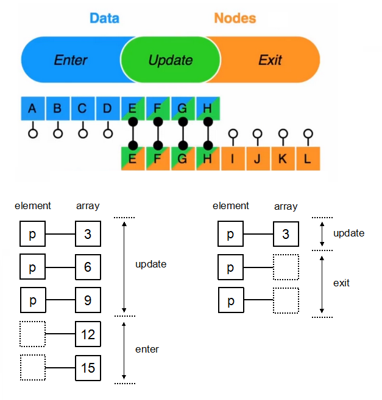

d3-selection API
允许强大的数据驱动文档对象模型 (DOM): 设置 attributes, styles, properties, HTML 或 text 内容等等。
使用
data join 的
enter 和
exit
选择集可以用来根据具体的数据 add 或 remove 元素。
选择集的方法通常选择当前的选择集或者新的选择集，因此允许进行链式调用。
之前我们的数据绑定都是需要元素 与 数据 一一对应起来的(长度相等)，
但：如果元素节点个数 与 数据长度 对不上了怎么办？ （也就是：可能存在 元素节点多了 或者数据多了的情况），
对于这种情况，就需要用到下面这两个方法来一起完成数据绑定、更新啦！！
- 从概念上来讲，enter 选择集的占位符是一个指向父元素的指针(上述例子中为 body)。enter 选择集通常仅仅用来添加元素，并且在添加完元素之后与 update 选择集进行 merged, 这样的话数据的修改可以同时应用于 enter 的元素和 update 的元素。
- 元素的顺序与数据的顺序一致，因为旧数据的顺序和新数据的顺序是一致的( enter 选择集长度与数据长度一致，只不过中间会有 empty 表示不需要插入元素, 因此能保证次序)。
-
.join().png)
selection.enter()选择集 通常在数据比节点多时用来创建缺失的节点，（也就是创建那些 有对应数据还没有 DOM 节点）【特别是在没有任何dom元素，只有数据的情况下，通过数据来生成dom元素，就是靠enter()来生成的，因为将生成的数据是在enter()中的！！】。
selection.exit()选择集 通常用来移除多余的元素,（也就是删除那些 没有对应数据的已经存在的 DOM 节点）
data().join() 相当于 enter() 和 exit() 的组合
数据绑定的2个重要选择集：enter、exit，这里类似于Vue.js中的diff算法
- 当data数据的长度 等于对应DOM元素的个数时【即data数组长度 = dom元素个数】，此时DOM不变，但内容变：新更
updat更新数据： 1、 2、 3、 4、 5 - 当data数据的长度 大于对应DOM元素的个数时【即data数组长度 > dom元素个数】，而data数组长度大于多出的这部分被称为：enert
enter添加数据： 1、 2、 3、 4、 5 - 当data数据的长度 小于对应DOM元素的个数时【即data数组长度 < dom元素个数】，而大dom个数多出的这部分被称为：exit
exit添加数据： 1、 2、 3、 4、 5 - 在实际应用中，由于dom元素 和 data数组 的长度是不固定的，一般都是从后端返回数据，所以不对等，而这种情况下update、enter、exit这3种情况都有可能发生！！所以就组合应用！！
update更新、enter添加、exit删除 组合：壹、 贰、 叁、 肆、 伍update、enter、exit 组合操作DOM的最简流程
-
壹、 贰、 叁、 肆、 伍

原始数据：
1、
2、
3、
4、
5